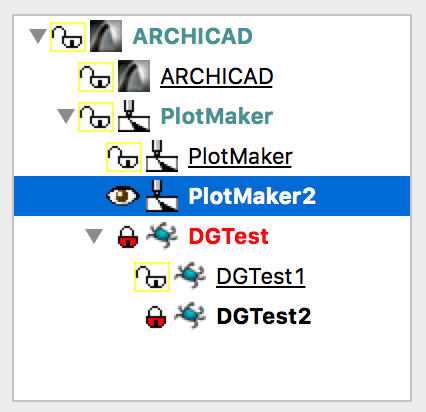
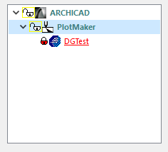

Tree View
A tree view control is a hierarchical display of labeled items. The top item in the hierarchy is called the root. If an item has other items below it in the hierarchy, it is also referred to as a parent. Items subordinate to parents are called children. Child items, when displayed, are indented below their parent item. The hierarchy may be expanded or collapsed at any level to display or hide child items. On Windows, there is a plus (+) or minus (-) button next to every parent item. The user clicks the buttons to expand or collapse a parent item's list of child items. On Macintosh, right and down arrow icons serve for the same purpose.
A tree view item has an item text (label) and it can have two type of icons: the state icon and the normal icon. Icons are always on the left side of the item text. If the tree view has both type of icons, the state icon is the leftmost.
-
 
Item type
- DG_ITM_TREEVIEW
Subtypes
-
Subtype Meaning DG_TVT_SINGLESELECT Only one selection is possible. DG_TVT_MULTISELECT Multiple-selection is possible.
Flags
-
Value Meaning DG_TVT_LABELEDIT Tree view item labels can be edited by the user. DG_TVT_DRAGDROP Tree view handles drag and drop inside the tree view itself.  Windows only:
Windows only:DG_TVT_ROOTBUTTON If this flag is specified, the root item has plus (+) or minus (-) button.
GRC Specification
SingleSelTreeView x y dx dy fontSpec niWidth niHeight siWidth siHeight editable dragable maxChCount [noRootButton]
MultiSelTreeView x y dx dy fontSpec niWidth niHeight siWidth siHeight editable dragable maxChCount [noRootButton]
where x and y are the pixel coordinates of the upper left corner of the tree view, dx and dy are the width and height of the control in pixels. fontSpec declares the font size and style of the item labels. niWidth, niHeight and siWidth, siHeight are the width and height of the normal and status icons in pixels, respectively. The editable and dragable flags define whether the item labels can be edited and the drag and drop feature is enabled. If the optional noRootButton flag is present, the root item has no plus (+) or minus (-) button on Windows.
Possible values of fontSpec:
-
Value DG constant combination used in DGSetItemFont ExtraSmall DG_IS_EXTRASMALL SmallPlain DG_IS_SMALL | DG_IS_PLAIN SmallBold DG_IS_SMALL | DG_IS_BOLD SmallItalic DG_IS_SMALL | DG_IS_ITALIC SmallUnderline DG_IS_SMALL | DG_IS_UNDERLINE LargePlain DG_IS_LARGE | DG_IS_PLAIN LargeBold DG_IS_LARGE | DG_IS_BOLD LargeItalic DG_IS_LARGE | DG_IS_ITALIC LargeUnderline DG_IS_LARGE | DG_IS_UNDERLINE
Possible values of editable:
-
Value Meaning labelEdit The DG_TVT_LABELEDIT flag is set. noLabelEdit The DG_TVT_LABELEDIT flag is not set.
Possible values of dragable:
-
Value Meaning dragDrop The DG_TVT_DRAGDROP flag is set. noDragDrop The DG_TVT_DRAGDROP flag is not set.
Messages
-
Message Meaning DG_MSG_CLICK The state icon of a tree item is clicked. The message data contains the tree item ID. If the dialog callback function returns 1, the previous selection is kept and further processing of the click event is omitted. DG_MSG_CHANGE A tree view item was edited or dragged by the user, or new item(s) was/were selected in the tree view. The message data parameter is a pointer to a DGTreeViewChangeData structure that contains information about the user action causing the change. DG_MSG_FOCUS The tree view gains or loses the keyboard focus. The message data is 1 or zero, respectively. DG_MSG_DRAGDROP Drag and drop related event occured. This message can come only after it is enabled with DGEnableMessage. Tree views can be both drag source and target.
Modification Flag
The DGTreeViewSelectItem and DGTreeViewDeselectItem functions set the tree view's modification flag except if they are called when handling the DG_MSG_INIT message in the dialog callback function. The flag can also be set by user actions that change the selection in the tree view and generate DG_MSG_CHANGE messages. Use DGModified or DGResetModified to retrieve or reset (clear) the state of the modification flag.
Remarks
Call DGTreeViewInsertItem to insert items into a tree view with the desired hierarchy and DGTreeViewDeleteItem to delete them. The number of items currently in a tree view can be retrieved by DGTreeViewGetItemCount. The item hierarchy can be expanded or collapsed not only by user actions but from program code, too. Use DGTreeViewExpandItem or DGTreeViewCollapseItem to display or hide the children of a parent item. To test whether a tree view item is expanded or collapsed call DGTreeViewIsItemExpanded. The ID of a specified tree view item can be retrieved by DGTreeViewGetItem. This function is also good for enumerating tree view items and getting some other information about them (for example a tree item is a parent or not). A tree view item can be retrieved from the mouse position as well with the help of DGTreeViewGetItemFromPosition function.
A tree view item can have two types of icons: the state icon and the normal icon. Both types of icons can be set and retrieved by DGTreeViewSetItemIconId / DGTreeViewSetItemIcon, and DGTreeViewGetItemIconId / DGTreeViewGetItemIcon, respectively. DGTreeViewSetItemIconId and DGTreeViewGetItemIconId use the resource ID of the icon, depending on the iconType parameter, while DGTreeViewSetItemIcon and DGTreeViewGetItemIcon use the icon description data, referenced with NSImage* (MAC only) or HICON (WIN only).
The number of different state icons in a tree view is limited to 12. There is no such limitation for the normal icons. If the item icon is not set yet by DGTreeViewSetItemIconId, an empty area is displayed instead of shifting the content of the item to the left. Any type of icons can be omitted by setting its size to zero either from resource or by a call to DGTreeViewSetIconSize. These settings apply to the whole tree view, i.e. to all tree items. The current icon size settings can be retrieved by DGTreeViewGetIconSize.
DGTreeViewSetItemText and DGTreeViewGetItemText serve to set and retrieve the text of tree view items. The text style, text color and status of each tree view item can be changed separately by DGTreeViewSetItemStyle, DGTreeViewSetItemColor and DGTreeViewSetItemStatus. To retrieve these tree view item properties use DGTreeViewGetItemStyle, DGTreeViewGetItemColor and DGTreeViewGetItemStatus, respectively. Each tree view item can have a user-defined value that can be used to store any item specific user data. DGTreeViewSetItemUserData and DGTreeViewGetItemUserData give an access to this value.
When more tree view items are inserted or deleted or more parameters of them (i.e. text, color, style, status, etc.) are modified simultaneously by calling tree view specific functions, it is advised to enclose these function calls by DGTreeViewDisableDraw and DGTreeViewEnableDraw to avoid unwanted screen updates. As DGTreeViewEnableDraw itself does not update the tree view, it is the application's responsibility to redraw the invalid areas. If almost the whole tree view becomes invalid, use DGInvalidateItem or DGRedrawItem to update it. However, only if a few tree view items must be repainted use DGTreeViewRedrawItem. Call DGTreeViewGetItemRect to get the rectangle of a particular tree view item. This function is also good for testing whether a tree view item is visible or not.
A tree view control can be single-selection or multiple-selection. The user can select tree view items by the mouse or by keypresses through the usual ways. To select or delselect one or more tree view items from the program code call DGTreeViewSelectItem and DGTreeViewDeselectItem, respectively. Use DGTreeViewGetSelCount to retrieve the number of selected tree view items and DGTreeViewGetSelected or DGTreeViewGetSelItems to get their indices. A mouse click on the empty client area of a tree view (where there is no tree view item) removes all the previous selections. In this case a DG_MSG_CHANGE message is sent to notify the application.
A tree view control's scroll postion can be retrieved and adjusted with DGTreeViewGetScrollPositionand DGTreeViewSetScrollPosition, repspectively.
When handling the DG_MSG_CHANGE message in the dialog callback function, the actionFlag member of the DGTreeViewChangeData structure tells what happened to the tree view item. Possible values are:
-
ActionFlag Action DG_TVCF_SELECTION Selection changed. Other members of the structure are zero. DG_TVCF_EDITBEGIN Label editing is being started. treeItem member of the sturcture contains the ID of the currently edited tree view item, other members are zero. When handling the DG_MSG_CHANGE message the application can cancel the edit operation before it starts at all, by returning 1 in the dialog callback function. DG_TVCF_EDITEND Label editing is finished. When handling the DG_MSG_CHANGE message the application can accept the new text by returning DG_TVCR_SETNEWTEXT, revert to the original value by returning DG_TVCR_KEEPOLDTEXT or continue the editing by returning DG_TVCR_EDITTEXT in the dialog callback function. DG_TVCF_EXPAND The list of the child items of the parent tree view item given by the treeItem member of the structure is expanded. Other members are zero. DG_TVCF_COLLAPSE The list of the child items of the parent tree view item given by the treeItem member of the structure is collapsed. Other members are zero.
Label editing and drag and drop capability can be enabled from GRC only, by setting the labelEdit and dragDrop flags, respectively. A tree view can receive DG_MSG_CHANGE message with DG_TVCF_EDITBEGIN or DG_TVCF_EDITEND action flag only if it has the DG_TVT_LABELEDIT flag.
The tree view is one of the focusable controls of DG. When a tree view gains or loses the keyboard focus as a result of user actions, the dialog callback function receives a DG_MSG_FOCUS message. The keyboard focus can be set to a tree view from program code, too, by DGSetFocus. To retrieve the control that currently has the keyboard focus use DGGetFocus.
The keyboard focus and the focusable control categories in DG essentially have the same meaning as in the Macintosh operating system (i.e. the same type of controls are focusable in DG and on Macintosh). On Windows, however, more controls can have keyboard focus. Focusable controls of DG form a subset of focusable controls of Windows. The DGSetFocus and DGGetFocus functions work on focusable controls of DG only.
The detailed help information of the item can be invoked by setting the keyboard focus to a focusable dialog item then pressing the [F1] key on Windows or [Help] key on Macintosh; or by clicking the right mouse button on the item; or by clicking the help [?] button in the dialog caption then clicking on the item itself. If tooltips are enabled, the short help information is displayed as usual. There are two ways to display help text for a tree view. Help text can be displayed for each item of the tree view or only one help text can be displayed for the entire tree view. The help style of the tree view can be set and retrieved by the DGTreeViewSetHelpStyle and DGTreeViewGetHelpStyle functions, respectively.
Requirements
- Version: DG 2.2.0 or later
- Header: DG.h
See Also
Dialog item types, DGTreeViewChangeData
Tree view specific functions, DGGetFocus, DGInvalidateItem, DGModified. DGRedrawItem, DGResetModified, DGSetFocus, DGSetItemFont, Callback functions
DG_MSG_CLICK, DG_MSG_CHANGE, DG_MSG_FOCUS, DG_MSG_INIT